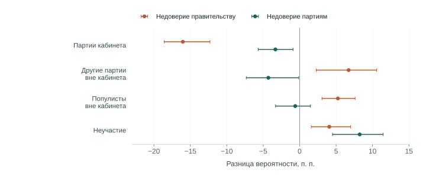
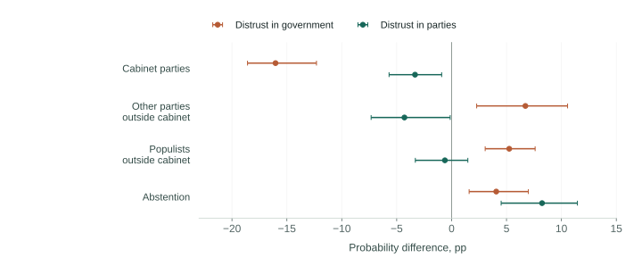
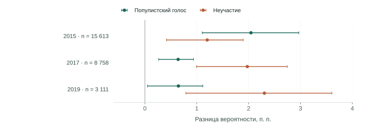
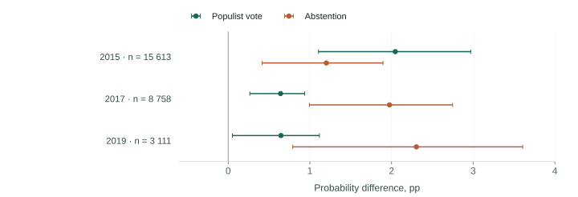
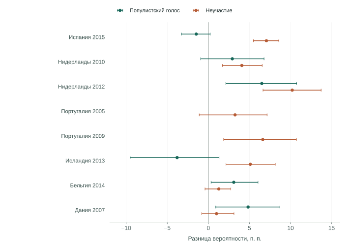
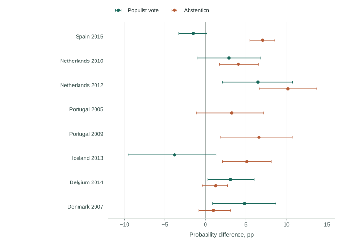

Испания сменила правительство раньше, чем поддержала Podemos
В ноябре 2011 года испанские социалисты потеряли около 15 процентных пунктов голосов. Большинство получила консервативная Народная партия, давно участвовавшая в управлении страной. Банковский кризис начался тремя годами раньше. На следующих парламентских выборах, в декабре 2015-го, Podemos и её региональные союзники получили около 21% голосов. Поражение правительства и прорыв новой силы оказались разными событиями, разделёнными четырьмя годами.
Podemos важна для этого сравнения не просто как новая левая партия. World Populism Dataset относит её кампанию к популистским: она противопоставляла обычных граждан политической и экономической элите, действующей в собственных интересах. В 2011 году голоса перешли к привычной альтернативе социалистам. В 2015-м крупную поддержку получила партия, оспаривавшая устройство прежней системы представительства.
Почему экономическое недовольство сопровождает такие разные исходы? Избиратель может наказать конкретное правительство, пересмотреть важность отдельных вопросов или утратить доверие к политикам вообще. Эти объяснения часто соединяют в одну историю: кризис заставил людей заняться экономикой и привёл их к популистам. Но каждый переход в этой истории нужно проверить отдельно.
Мы начинаем с 29 банковских кризисов в 28 странах, затем переходим к общему европейскому опросу и национальным исследованиям восьми стран. Международные результаты показывают, когда менялись голоса. Опросы позволяют различить оценки экономики, приоритеты и доверие. Британская и немецкая панели проверяют, какие ответы предшествовали голосованию. Вместе они дают более определённый вывод о получателях недовольства, хотя не устанавливают единую причинную цепочку от кризиса к популизму.
Spain changed governments before Podemos broke through
In November 2011, Spain’s Socialists lost roughly 15 percentage points of the vote. The conservative People’s Party, an established governing alternative, won a majority. The banking crisis had begun three years earlier. At the next parliamentary election, in December 2015, Podemos and its regional allies won about 21%. The incumbent’s defeat and the new party’s breakthrough were separate events, four years apart.
Podemos matters here for more than being a new left-wing party. The World Populism Dataset classifies its campaign as populist: it opposed ordinary citizens to political and economic elites pursuing their own interests. In 2011, voters supported a familiar alternative to the Socialists. In 2015, a party challenging the established system of representation gained substantial support.
Why does economic discontent accompany such different outcomes? A voter might punish a particular government, reconsider which issues matter most, or lose trust in politicians generally. These explanations are often joined into one story: a crisis redirected attention towards the economy and led voters to populists. Each link in that story needs a separate test.
We begin with 29 banking crises in 28 countries, then examine a common European survey and national studies in eight countries. International election results show when votes changed. Surveys distinguish economic assessments, priorities and trust. British and German panels establish which answers preceded voting. Together they clarify who receives discontent, although they do not establish a single causal chain from crisis to populism.
Первые выборы пропускают часть перемен
Испанская последовательность подсказывает, зачем смотреть дальше ближайших выборов. Для каждого из 29 кризисов мы сравниваем последние докризисные выборы с первыми и вторыми после начала кризиса. Вторые должны состояться в пределах десяти лет, без нового банковского кризиса в используемой хронике и при демократическом режиме. Выборка одна и та же на обоих горизонтах.
Медианный прирост суммарной доли популистских кампаний составляет 0,18 процентного пункта на первых выборах и 5,48 на вторых. Медианный срок от начала кризиса до голосования увеличивается примерно с двух до шести лет. Поэтому небольшой результат на первых выборах ещё не означает, что политическая перестройка закончилась.
The first election misses some subsequent change
Spain’s sequence suggests why we should look beyond the next election. For each crisis, we compare the last pre-crisis election with the first and second elections afterwards. The second must occur within ten years, without another banking crisis in the chronology and under a democratic regime. The sample remains identical at both horizons.
The median increase in the combined vote share of populist campaigns is 0.18 percentage points at the first election and 5.48 at the second. The median time since the crisis increases from about two to six years. A small first-election change therefore does not mean that political restructuring is over.
Поздний сдвиг заметнее, но не одинаков во всех кризисах

Числа и охват
| ISO | Кризис | Первые выборы | Сдвиг, п. п. | Вторые выборы | Сдвиг, п. п. |
|---|---|---|---|---|---|
| ARG | 2001 | 2003-04-27 | 36.30 | 2005-10-23 | 29.90 |
| BEL | 2008 | 2010-06-13 | -4.24 | 2014-05-25 | -12.00 |
| BGR | 1996 | 1997-04-19 | 5.27 | 2001-06-18 | 42.74 |
| BOL | 1994 | 1997-06-01 | 5.10 | 2002-06-30 | -1.70 |
| BRA | 1994 | 1998-10-04 | -1.10 | 2002-10-06 | -14.90 |
| COL | 1998 | 2002-03-10 | 0.00 | 2006-03-12 | 17.50 |
| DEU | 2008 | 2009-09-27 | 3.20 | 2013-09-22 | -0.10 |
| DNK | 2008 | 2011-09-15 | -1.73 | 2015-06-18 | 7.20 |
| ECU | 1998 | 2002-10-20 | -11.50 | 2006-10-15 | 0.13 |
| ESP | 2008 | 2011-11-20 | 0.00 | 2015-12-20 | 20.66 |
| FIN | 1991 | 1995-03-19 | 0.00 | 1999-03-21 | 0.00 |
| GBR | 2007 | 2010-05-06 | 0.00 | 2015-05-07 | 12.65 |
| GRC | 2008 | 2009-10-04 | 0.58 | 2012-05-06 | 29.31 |
| IND | 1993 | 1996-04-27 | 0.18 | 1998-02-16 | 5.48 |
| IRL | 2008 | 2011-02-25 | 3.00 | 2016-02-26 | 6.91 |
| ISL | 2008 | 2009-04-25 | 22.00 | 2013-04-27 | 29.53 |
| ITA | 2008 | 2013-02-24 | 0.61 | 2018-03-04 | 17.60 |
| JPN | 1997 | 2000-06-25 | 0.00 | 2003-11-09 | 0.00 |
| LVA | 1995 | 1995-09-30 | 30.05 | 1998-10-03 | 0.00 |
| LVA | 2008 | 2010-10-02 | -8.54 | 2011-09-17 | 18.33 |
| NLD | 2008 | 2010-06-09 | 9.56 | 2012-09-12 | 4.19 |
| NOR | 1991 | 1993-09-13 | -6.70 | 1997-09-16 | 2.30 |
| PHL | 1997 | 1998-05-11 | 26.68 | 2001-05-14 | 0.00 |
| POL | 1992 | 1993-09-19 | 0.00 | 1997-09-21 | 0.00 |
| PRT | 2008 | 2009-09-27 | 3.58 | 2011-06-05 | -1.15 |
| ROU | 1998 | 2000-11-26 | 19.48 | 2004-11-28 | 13.00 |
| TUR | 2000 | 2002-11-03 | 26.13 | 2007-07-22 | 31.18 |
| USA | 2007 | 2008-11-04 | 0.00 | 2010-11-02 | 0.00 |
| VEN | 1994 | 1998-11-08 | -2.70 | 2000-07-30 | 17.90 |
Later gains are larger, but crises differ

Values and coverage
| ISO | Crisis | First election | Change, pp | Second election | Change, pp |
|---|---|---|---|---|---|
| ARG | 2001 | 2003-04-27 | 36.30 | 2005-10-23 | 29.90 |
| BEL | 2008 | 2010-06-13 | -4.24 | 2014-05-25 | -12.00 |
| BGR | 1996 | 1997-04-19 | 5.27 | 2001-06-18 | 42.74 |
| BOL | 1994 | 1997-06-01 | 5.10 | 2002-06-30 | -1.70 |
| BRA | 1994 | 1998-10-04 | -1.10 | 2002-10-06 | -14.90 |
| COL | 1998 | 2002-03-10 | 0.00 | 2006-03-12 | 17.50 |
| DEU | 2008 | 2009-09-27 | 3.20 | 2013-09-22 | -0.10 |
| DNK | 2008 | 2011-09-15 | -1.73 | 2015-06-18 | 7.20 |
| ECU | 1998 | 2002-10-20 | -11.50 | 2006-10-15 | 0.13 |
| ESP | 2008 | 2011-11-20 | 0.00 | 2015-12-20 | 20.66 |
| FIN | 1991 | 1995-03-19 | 0.00 | 1999-03-21 | 0.00 |
| GBR | 2007 | 2010-05-06 | 0.00 | 2015-05-07 | 12.65 |
| GRC | 2008 | 2009-10-04 | 0.58 | 2012-05-06 | 29.31 |
| IND | 1993 | 1996-04-27 | 0.18 | 1998-02-16 | 5.48 |
| IRL | 2008 | 2011-02-25 | 3.00 | 2016-02-26 | 6.91 |
| ISL | 2008 | 2009-04-25 | 22.00 | 2013-04-27 | 29.53 |
| ITA | 2008 | 2013-02-24 | 0.61 | 2018-03-04 | 17.60 |
| JPN | 1997 | 2000-06-25 | 0.00 | 2003-11-09 | 0.00 |
| LVA | 1995 | 1995-09-30 | 30.05 | 1998-10-03 | 0.00 |
| LVA | 2008 | 2010-10-02 | -8.54 | 2011-09-17 | 18.33 |
| NLD | 2008 | 2010-06-09 | 9.56 | 2012-09-12 | 4.19 |
| NOR | 1991 | 1993-09-13 | -6.70 | 1997-09-16 | 2.30 |
| PHL | 1997 | 1998-05-11 | 26.68 | 2001-05-14 | 0.00 |
| POL | 1992 | 1993-09-19 | 0.00 | 1997-09-21 | 0.00 |
| PRT | 2008 | 2009-09-27 | 3.58 | 2011-06-05 | -1.15 |
| ROU | 1998 | 2000-11-26 | 19.48 | 2004-11-28 | 13.00 |
| TUR | 2000 | 2002-11-03 | 26.13 | 2007-07-22 | 31.18 |
| USA | 2007 | 2008-11-04 | 0.00 | 2010-11-02 | 0.00 |
| VEN | 1994 | 1998-11-08 | -2.70 | 2000-07-30 | 17.90 |
За шесть лет партии могут усилиться и без финансового краха. Мы нашли 50 последовательностей двух выборов в спокойные периоды: без банковского кризиса и годового сокращения ВВП на всём интервале. После сравнения кризисных и спокойных последовательностей внутри 21 общей страны, с одинаковым весом стран, разница средних к вторым выборам равна +5,41 п. п. Интервал неопределённости широк: от −1,19 до +12,04 п. п. После исключения кризисов 2007–2009 годов медианный кризисный прирост в оставшихся 16 эпизодах составляет лишь 1,22 пункта.
Эта выборка показывает задержку и неоднородность сдвига. Она не позволяет приписать кризису всю последующую прибавку голосов. Funke, Schularick и Trebesch исследовали более длинную историю и отдельно сравнивали финансовые кризисы с другими спадами; их показатель крайне правых также отличается от нашей суммы левых и правых популистских кампаний.
Остаётся вопрос, на который последовательность выборов ответить не может: чем различались люди, выбравшие привычную оппозицию, популистов или неучастие?
Parties can gain support over six years without a financial collapse. We identify 50 two-election sequences in calm periods, with neither a banking crisis nor an annual GDP contraction throughout the interval. Comparing crisis and calm sequences within 21 shared countries, with countries weighted equally, gives a second-election mean difference of +5.41 points. Its uncertainty interval is wide: −1.19 to +12.04 points. Excluding crises that began in 2007–2009 leaves 16 episodes with a median crisis-period gain of just 1.22 points.
This sample reveals delay and heterogeneity. It cannot attribute the entire subsequent gain to the crisis. Funke, Schularick and Trebesch studied a much longer history and explicitly compared financial crises with other downturns. Their far-right outcome also differs from our combined left- and right-wing populist campaigns.
Electoral sequences leave a question unanswered: how did people choosing established opposition parties, populists or abstention differ?
Три вида недовольства требуют разных вопросов
Представим двух людей, считающих экономику плохой. Один главным вопросом выборов считает занятость, другой иммиграцию. Первый может доверять политикам и рассчитывать на смену кабинета. Второй может считать все партии корыстными и вообще не прийти на выборы. Одинаковая оценка экономики не сообщает ни приоритет, ни адрес политического недовольства.
Поэтому мы разделяем три утверждения. «Экономика ухудшается» описывает оценку положения дел. «Экономика важнее других вопросов» описывает приоритет. «Политикам нельзя доверять» описывает отношение к представителям. Отдельный вопрос об отношении к действующему правительству позволяет отличить недовольство конкретным кабинетом от недоверия партиям вообще. Эти ответы могут совпадать у одного человека, но не заменяют друг друга.
Так же разделены исходы: голос за партии кабинета, за популистскую партию вне кабинета, за другую партию вне кабинета и явное неучастие. Последний вариант существенен: исследование только голосовавших заранее исключило бы людей, чьё недоверие связано с отказом выбирать. Отказ назвать партию и неизвестный партийный код не считаются неучастием.
Здесь нужно уточнить, кого мы называем популистами. В исторической части WPD классифицирует кампанию, в которой обычные люди противопоставляются элите, намеренно использующей власть в своих интересах. Одной критики некомпетентности, обещания повысить доходы или обвинения отдельного чиновника в коррупции недостаточно. Это классификация политической риторики, а не проверка истинности обвинений и не оценка качества программы. Складываются голоса за такие кампании, независимо от их левой или правой позиции; обычный порог охвата базы составляет 5% голосов.
Для европейских опросов нужна более подробная партийная классификация, включая небольшие партии и выборы Европарламента. Мы используем The PopuList 4.0, экспертный список партий с датированными периодами популизма. В него входят, например, британские UKIP и Brexit Party. Основной вариант включает пограничные случаи, а отдельная проверка исключает их. Немецкая Die Linke после 2007 года относится к таким случаям; это существенно меняет состав популистского голоса. Непопулярная власть или любая новая оппозиция не становятся популистами автоматически. Два источника измеряют разные единицы, поэтому их числа не склеиваются в один ряд.
Three kinds of discontent require different questions
Consider two people who regard the economy as poor. One considers employment the central election issue; the other prioritises immigration. The first might trust politicians and expect a change of government to help. The second might consider every party self-serving and stay home. The same economic assessment reveals neither an issue priority nor the target of political dissatisfaction.
We therefore separate three statements. “The economy is deteriorating” describes an assessment of conditions. “The economy matters more than other issues” describes a priority. “Politicians cannot be trusted” describes an attitude towards representatives. A separate question about the incumbent government distinguishes dissatisfaction with that cabinet from distrust of parties generally. One person can hold all these views, but the questions are not interchangeable.
We also separate four outcomes: voting for cabinet parties, populist parties outside the cabinet, other parties outside the cabinet, and explicitly reported abstention. The last matters because studying voters alone would exclude people whose distrust accompanies withdrawal. Refusing to name a party and reporting an unidentified party are not coded as abstention.
Who counts as populist? In the historical analysis, WPD classifies a campaign opposing ordinary people to an elite deliberately using power for its own benefit. Criticising incompetence, promising higher incomes or accusing an individual official of corruption is insufficient. This classifies rhetoric, not the truth of accusations or the quality of policy. We sum classified campaign votes across ideological positions; the dataset’s usual coverage threshold is 5% of votes.
European surveys require more detailed party coverage, including small parties and European Parliament elections. We use The PopuList 4.0, an expert party classification with dated populist periods. British examples include UKIP and the Brexit Party. The primary definition includes borderline cases; a mandatory alternative excludes them. Germany’s Die Linke after 2007 is one such case, substantially affecting the composition of the populist vote. An unpopular government or a new opposition party does not automatically qualify. The two sources classify different units, so their results are not combined into one series.
Недоверие правительству и партиям имеет разных получателей
Общий вопрос для Европы позволяет задать Eurobarometer 71.3, проведённый после выборов Европарламента 2009 года. В нём есть одинаковые вопросы об экономике, важных проблемах, доверии правительству и партиям. Для совместного сравнения четырёх исходов остаются 15 962 человека в 19 странах. Каждая страна получает одинаковый суммарный вес, чтобы результат не определялся размером её выборки.
На следующем графике показаны условные разницы вероятностей. Модель сравнивает доверие и недоверие, сохраняя остальные наблюдаемые признаки человека: оценку экономики, приоритеты, другой вид доверия, страну и социальные характеристики. Например, разница +8 пунктов означает, что средняя предсказанная вероятность исхода выше на 8 пунктов. Это не число людей, которые действительно поменяли решение, и не эффект принудительного изменения доверия.
Distrusting the government and distrusting parties have different recipients
Eurobarometer 71.3, conducted after the 2009 European Parliament election, supplies common questions about the economy, important problems, trust in government and trust in parties. The joint four-outcome comparison retains 15,962 people in 19 countries. Each country receives the same total weight, preventing its sample size from determining the result.
The next chart shows conditional probability differences. The model compares trust with distrust while retaining each person’s other observed characteristics: economic assessment, priorities, the other trust measure, country and social characteristics. A difference of +8 points, for example, means an eight-point higher average predicted probability. It is neither a count of people who actually changed their decision nor the effect of experimentally changing trust.
У общего недоверия партиям выделяется неучастие

Числа и охват
| Сравнение | Исход | Человек | Разница, п. п. | Нижняя 95% | Верхняя 95% |
|---|---|---|---|---|---|
| Правительство | Партии кабинета | 15962 | -16.03 | -18.58 | -12.30 |
| Правительство | Другие вне кабинета | 15962 | 6.72 | 2.28 | 10.56 |
| Правительство | Популисты вне кабинета | 15962 | 5.25 | 3.06 | 7.61 |
| Правительство | Неучастие | 15962 | 4.07 | 1.60 | 6.99 |
| Партии | Партии кабинета | 15962 | -3.33 | -5.69 | -0.90 |
| Партии | Другие вне кабинета | 15962 | -4.30 | -7.33 | -0.13 |
| Партии | Популисты вне кабинета | 15962 | -0.61 | -3.30 | 1.48 |
| Партии | Неучастие | 15962 | 8.24 | 4.51 | 11.46 |
Abstention stands out for general distrust of parties

Values and coverage
| Comparison | Outcome | People | Difference, pp | Lower 95% | Upper 95% |
|---|---|---|---|---|---|
| Government | Cabinet parties | 15962 | -16.03 | -18.58 | -12.30 |
| Government | Other outside cabinet | 15962 | 6.72 | 2.28 | 10.56 |
| Government | Populists outside cabinet | 15962 | 5.25 | 3.06 | 7.61 |
| Government | Abstention | 15962 | 4.07 | 1.60 | 6.99 |
| Parties | Cabinet parties | 15962 | -3.33 | -5.69 | -0.90 |
| Parties | Other outside cabinet | 15962 | -4.30 | -7.33 | -0.13 |
| Parties | Populists outside cabinet | 15962 | -0.61 | -3.30 | 1.48 |
| Parties | Abstention | 15962 | 8.24 | 4.51 | 11.46 |
При недоверии правительству вероятность голоса за партии кабинета ниже примерно на 16 пунктов. Положительные разницы распределены между другими партиями и неучастием. У общего недоверия партиям другая картина: +8,24 п. п. для неучастия, с интервалом от +4,51 до +11,46. Для популистского голоса разница составляет −0,61 пункта, а интервал от −3,30 до +1,48 включает оба направления.
В отдельном сравнении власти с остальными голосовавшими плохая оценка экономики связана с меньшей вероятностью поддержки кабинета. Но среди людей, уже выбравших партии вне кабинета, та же оценка не позволяет уверенно отличить популистский голос от другого. Экономическое недовольство сообщает больше об отношении к власти, чем о конкретном получателе освободившегося голоса.
У этого результата есть очевидная альтернатива: человек мог сначала выбрать партию, а затем объяснить свой выбор плохой экономикой или недоверием. Все эти ответы получены после выборов. Чтобы проверить временной порядок, нужны ответы тех же людей до голосования.
Distrust of government is associated with roughly a 16-point lower probability of voting for cabinet parties. Positive differences are distributed between other parties and abstention. Distrust of parties generally looks different: +8.24 points for abstention, with an interval from +4.51 to +11.46. The populist-vote difference is −0.61 points, with an interval from −3.30 to +1.48 spanning both directions.
In a separate comparison of cabinet parties with other voters, a poor economic assessment is associated with less government support. Among people already choosing parties outside the cabinet, however, that assessment does not clearly distinguish a populist vote from another vote. Economic discontent tells us more about attitudes towards incumbents than about the particular recipient of the available vote.
An obvious alternative remains: people might first choose a party and then explain their choice through poor economic conditions or distrust. All these answers were collected after the election. Testing temporal order requires answers from the same people before they vote.
Что меняется, когда недоверие измерено до выборов
British Election Study позволяет связать предвыборные установки с последующим сообщённым голосом в 2015, 2017 и 2019 годах. Мы учитываем уже названное намерение голосовать, партийную привязанность и другие исходные характеристики. Вопрос становится строже: сообщает ли недоверие что-то о будущем выборе сверх того, что человек уже говорил о своих предпочтениях?
В первой проверке связь с популистским голосом заметно уменьшается после учёта этих предпочтений. При доверии депутатам 3 вместо 5 на семибалльной шкале разница для популистского голоса составляет +0,74, +0,31 и +0,24 пункта соответственно. Без исходного намерения и партийной привязанности она равна +5,22, +1,25 и +1,08. Это показывает, сколько связи уже присутствует в прежних предпочтениях. Оно не доказывает, что намерение является причинным посредником недоверия.
Затем мы используем повторные ответы: сравниваем поздние установки при одинаковых ранних оценках экономики, правительства, приоритета и доверия. На графике сохраняются ранние партийные предпочтения. Так мы приближаемся к вопросу об изменении установок, хотя по-прежнему не наблюдаем случайно назначенного изменения доверия.
What changes when distrust is measured before voting
The British Election Study links pre-election attitudes to subsequently reported votes in 2015, 2017 and 2019. We account for stated voting intention, party identification and other initial characteristics. This asks a stricter question: does distrust tell us anything about subsequent choice beyond what people already said about their preferences?
In the first test, the populist-vote association becomes substantially smaller after accounting for those preferences. Trust in MPs at 3 rather than 5 on a seven-point scale corresponds to differences of +0.74, +0.31 and +0.24 points respectively. Without prior intention and party identification, the differences are +5.22, +1.25 and +1.08. This shows how much association is already present in earlier preferences. It does not establish intention as a causal mediator of distrust.
We then use repeated answers, comparing later attitudes conditional on the same earlier assessments of the economy, government, priority and trust. The chart retains early party preferences. This moves closer to a question about changing attitudes, although it still does not observe randomly assigned changes in trust.
Повторные ответы сохраняют связь с неучастием

Числа и охват
| Сравнение | Исход | Человек | Разница, п. п. | Нижняя 95% | Верхняя 95% |
|---|---|---|---|---|---|
| 2015 | Популисты вне кабинета | 15613 | 2.05 | 1.11 | 2.97 |
| 2015 | Неучастие | 15613 | 1.20 | 0.42 | 1.90 |
| 2017 | Популисты вне кабинета | 8758 | 0.64 | 0.27 | 0.94 |
| 2017 | Неучастие | 8758 | 1.98 | 0.99 | 2.75 |
| 2019 | Популисты вне кабинета | 3111 | 0.65 | 0.05 | 1.12 |
| 2019 | Неучастие | 3111 | 2.30 | 0.79 | 3.61 |
Repeated answers retain an association with abstention

Values and coverage
| Comparison | Outcome | People | Difference, pp | Lower 95% | Upper 95% |
|---|---|---|---|---|---|
| 2015 | Populists outside cabinet | 15613 | 2.05 | 1.11 | 2.97 |
| 2015 | Abstention | 15613 | 1.20 | 0.42 | 1.90 |
| 2017 | Populists outside cabinet | 8758 | 0.64 | 0.27 | 0.94 |
| 2017 | Abstention | 8758 | 1.98 | 0.99 | 2.75 |
| 2019 | Populists outside cabinet | 3111 | 0.65 | 0.05 | 1.12 |
| 2019 | Abstention | 3111 | 2.30 | 0.79 | 3.61 |
Во всех трёх повторных сравнениях меньшее доверие связано с большей вероятностью неучастия. Положительная связь с популистским голосом тоже сохраняется, но её размер неодинаков: около двух пунктов в 2015 году и около 0,6 в двух следующих случаях. В 2015-м популистская разница больше, чем разница неучастия. Поэтому и британский результат нельзя свести к правилу, что недоверяющие люди всегда уходят с выборов.
У повторений есть свои пределы. Для выборов 2017 года ранние ответы относятся к 2015-му, поздние к концу 2016-го; интервал пересекает референдум о ЕС и смену состава кабинета. В 2019 году ранний вопрос о доверии задан только части панели, и её случайный отбор не подтверждён. В совместных моделях остаются 15 613, 8 758 и 3 111 человек. Британская панель начинается в 2014 году и не показывает, что произошло с доверием этих людей из-за кризиса 2008-го.
Большая выборка также не гарантирует полезного прогноза. В повторных сравнениях отдельная добавка недоверия улучшает вероятностный прогноз четырёх исходов менее чем на заранее выбранный 1% во всех трёх годах. При переносе исходной модели между выборами меняется даже знак пользы полного блока установок для некоторых задач. Связь, различимая внутри одного опроса, ещё не становится правилом, которое переносится на следующие выборы.
In all three repeated comparisons, lower trust is associated with a higher probability of abstention. A positive populist-vote association also remains, but its size varies: roughly two points in 2015 and 0.6 in the next two cases. In 2015, the populist difference exceeds the abstention difference. The British results therefore do not support a rule that distrusting people always withdraw from elections.
The repetitions have limitations. For the 2017 election, early answers come from 2015 and later answers from late 2016; the interval crosses the EU referendum and a change in cabinet composition. In 2019, the early trust question reaches only part of the panel, whose random selection is unverified. Joint models retain 15,613, 8,758 and 3,111 people. The panel begins in 2014 and cannot show how the 2008 crisis changed these individuals’ trust.
A large sample also does not guarantee useful prediction. In the repeated comparisons, adding distrust separately improves four-outcome probabilistic prediction by less than the specified 1% threshold in all three years. When the original model transfers between elections, even the direction of the full attitude block’s contribution changes for some tasks. An association detectable within one survey is not automatically a rule that transfers to the next election.
Стала ли экономика важнее при прежних взглядах
Недоверие не исчерпывает возможных изменений. Человек может сохранить свои взгляды, но начать выбирать партию по другому вопросу. Например, он по-прежнему поддерживает социальные расходы, однако теперь при голосовании больше думает об иммиграции. Именно различие между позицией и важностью темы лежит в основе объяснения, которое обсуждают Gidron и Kikuchi.
Обычный вопрос о главной проблеме страны не позволяет отделить это изменение от изменения взглядов. Немецкая панель GLES перед выборами 2013 года задаёт оба вопроса отдельно для налогов и социальных расходов, иммиграции и климата. Мы сравниваем ответы июля и августа, учитываем раннюю важность, раннюю и позднюю позицию, а также исходное намерение голосовать. В совместной проверке трёх тем остаются 2 962 человека.
Повышение поздней важности каждой темы на один пункт пятибалльной шкалы связано примерно с одним процентным пунктом популистского голоса, но все три интервала включают ноль. Добавление поздней важности после поздних позиций не улучшает предсказание на отложенных людях: вероятностная ошибка в совместной модели увеличивается примерно на 0,55%. Значения отдельных вариантов, которые выглядят убедительнее, не заменяют этот совместный результат.
Эта проверка не обнаруживает надёжной дополнительной информации от краткосрочного изменения важности. Она не опровергает долгосрочное объяснение смены приоритетов: несколько недель одной немецкой кампании отличаются от межстранового исследования за 2005–2020 годы. Кроме того, абсолютные оценки важности не задают фиксированного бюджета внимания. В нашей совместной выборке около 14% участников повысили важность как минимум двух тем сразу. Из роста интереса к экономике нельзя автоматически вывести падение интереса к климату.
Получается, что отношения между экономикой, приоритетами и выбором зависят от того, что именно измеряет вопрос и когда он задан. Следующая проверка меняет ещё одно условие: переносит сравнение на национальные выборы других стран.
Did economic issues become more important without views changing?
Distrust is not the only possible change. People can retain their views while starting to choose parties on a different issue. Someone might still support social spending but increasingly consider immigration when voting. This distinction between position and importance underlies the explanation discussed by Gidron and Kikuchi.
A standard question about the country’s main problem cannot separate this change from changing views. Germany’s GLES panel before the 2013 election asks both questions separately for taxation and social spending, immigration, and climate. We compare July and August answers, accounting for early importance, early and late positions, and initial voting intention. The joint three-topic test retains 2,962 people.
A one-point increase in later importance on the five-point scale is associated with roughly one percentage point of populist voting for each topic, but all three intervals include zero. Adding late importance after late positions does not improve prediction for held-out people: probabilistic error in the joint model increases by about 0.55%. Individual specifications that look more convincing do not replace this joint result.
This test finds no reliable additional information from short-term importance changes. It does not refute a longer-term priorities explanation: a few weeks of one German campaign differ from cross-country research covering 2005–2020. Absolute importance ratings also do not impose a fixed attention budget. About 14% of participants in our joint sample increased the importance of at least two topics simultaneously. Greater concern about the economy does not automatically imply less concern about climate.
The relationships between the economy, priorities and choice thus depend on what a question measures and when it is asked. The next test changes another condition: it examines national elections in additional countries.
Одинаковое недоверие не означает одинакового выбора
Дополнительные национальные данные охватывают Испанию 2015 года, Нидерланды 2010 и 2012 годов, Португалию 2005 и 2009-го, Исландию 2013-го, Бельгию 2014-го и Данию 2007-го. Вместе с британскими и немецкими выборами это 13 случаев в восьми странах. Мы не объединяем их в одну регрессию: вопросы различаются, часть ответов получена после выборов, а два случая предшествуют кризисной волне 2008 года. Здесь проверяется повторяемость связей, а не величина общего кризисного эффекта.
Distrust does not imply the same choice everywhere
Additional national data cover Spain in 2015, the Netherlands in 2010 and 2012, Portugal in 2005 and 2009, Iceland in 2013, Belgium in 2014, and Denmark in 2007. Including British and German elections gives 13 cases in eight countries. We do not pool them into one regression: questions differ, some answers follow elections, and two cases precede the 2008 crisis wave. These tests examine whether associations recur, not the size of a common crisis effect.
Получатели недоверия различаются между опросами

Числа и охват
| Сравнение | Исход | Человек | Разница, п. п. | Нижняя 95% | Верхняя 95% |
|---|---|---|---|---|---|
| ES2015 | Популисты вне кабинета | 4500 | -1.47 | -3.27 | 0.22 |
| ES2015 | Неучастие | 4500 | 7.07 | 5.48 | 8.58 |
| NL2010 | Популисты вне кабинета | 1959 | 2.91 | -0.93 | 6.78 |
| NL2010 | Неучастие | 1959 | 4.07 | 1.72 | 6.55 |
| NL2012 | Популисты вне кабинета | 1383 | 6.50 | 2.13 | 10.75 |
| NL2012 | Неучастие | 1383 | 10.21 | 6.65 | 13.72 |
| PT2005 | Неучастие | 1683 | 3.25 | -1.11 | 7.15 |
| PT2009 | Неучастие | 608 | 6.62 | 1.87 | 10.72 |
| IS2013 | Популисты вне кабинета | 1007 | -3.80 | -9.51 | 1.30 |
| IS2013 | Неучастие | 1007 | 5.11 | 2.14 | 8.15 |
| BE2014 | Популисты вне кабинета | 1370 | 3.09 | 0.33 | 6.04 |
| BE2014 | Неучастие | 1370 | 1.27 | -0.41 | 2.74 |
| DK2007 | Популисты вне кабинета | 3193 | 4.84 | 0.90 | 8.71 |
| DK2007 | Неучастие | 3193 | 0.99 | -0.81 | 3.12 |
Recipients of distrust differ across surveys

Values and coverage
| Comparison | Outcome | People | Difference, pp | Lower 95% | Upper 95% |
|---|---|---|---|---|---|
| ES2015 | Populists outside cabinet | 4500 | -1.47 | -3.27 | 0.22 |
| ES2015 | Abstention | 4500 | 7.07 | 5.48 | 8.58 |
| NL2010 | Populists outside cabinet | 1959 | 2.91 | -0.93 | 6.78 |
| NL2010 | Abstention | 1959 | 4.07 | 1.72 | 6.55 |
| NL2012 | Populists outside cabinet | 1383 | 6.50 | 2.13 | 10.75 |
| NL2012 | Abstention | 1383 | 10.21 | 6.65 | 13.72 |
| PT2005 | Abstention | 1683 | 3.25 | -1.11 | 7.15 |
| PT2009 | Abstention | 608 | 6.62 | 1.87 | 10.72 |
| IS2013 | Populists outside cabinet | 1007 | -3.80 | -9.51 | 1.30 |
| IS2013 | Abstention | 1007 | 5.11 | 2.14 | 8.15 |
| BE2014 | Populists outside cabinet | 1370 | 3.09 | 0.33 | 6.04 |
| BE2014 | Abstention | 1370 | 1.27 | -0.41 | 2.74 |
| DK2007 | Populists outside cabinet | 3193 | 4.84 | 0.90 | 8.71 |
| DK2007 | Abstention | 3193 | 0.99 | -0.81 | 3.12 |
В испанском опросе недоверие партиям связано прежде всего с неучастием. Положительной условной связи с голосом за Podemos модель не показывает. В Нидерландах 2012 года оно связано сразу с двумя исходами: +6,50 пункта для популистского голоса и +10,21 для неучастия. Эти различия сохраняют важный вопрос о получателе недовольства, который исчез бы в едином показателе «протестного поведения».
Размеры между странами нельзя читать как рейтинг силы одного эффекта. В Испании и Нидерландах спрашивают о партиях, в Дании и Бельгии о политиках, а в Португалии об их отзывчивости к таким людям, как респондент. Бельгийская выборка охватывает Фландрию и Валлонию, без Брюсселя. Для трёх опросов подходящий вес не подтверждён, поэтому основной расчёт невзвешенный. Эти ограничения остаются рядом с межстрановым сравнением.
Даже название «оппозиция» иногда вводит в заблуждение. Датская народная партия поддерживала правительство извне. В опросе 2007 года неодобрение кабинета связано с меньшей вероятностью голоса за неё. Популистская риторика не обязывает партию быть против действующего кабинета. Её избиратели могут доверять правительству и одновременно считать политический класс в целом чуждым себе.
Граница популизма тоже меняет ответ. Исключение пограничных партий уменьшает бельгийскую разницу недоверия для популистского голоса с +3,09 до +0,70 пункта. В Исландии исчезает сама популистская категория: наблюдаемый результат относился к Прогрессивной партии, пограничному случаю PopuList. Поэтому её сильную связь с экономическим приоритетом нельзя объявить общей закономерностью для популистов.
Национальные сравнения возвращают нас к политическому предложению. Экономический вопрос может быть важен, но ещё нужно знать, какая партия предлагает приемлемое решение и как она связана с действующей властью.
In the Spanish survey, distrust of parties is primarily associated with abstention. The model does not show a positive conditional association with voting for Podemos. In the Netherlands in 2012, distrust is associated with two outcomes: +6.50 points for populist voting and +10.21 for abstention. A combined measure of “protest behaviour” would conceal this distinction between recipients of discontent.
Magnitudes across countries are not a ranking of the strength of one effect. Spain and the Netherlands ask about parties, Denmark and Belgium about politicians, and Portugal about their responsiveness to people like the respondent. The Belgian sample covers Flanders and Wallonia, excluding Brussels. Suitable weights could not be verified for three surveys, so their primary estimates are unweighted. These limitations remain alongside the international comparison.
Even “opposition” can be misleading. The Danish People’s Party supported the government externally. In the 2007 survey, cabinet disapproval is associated with a lower probability of voting for it. Populist rhetoric does not oblige a party to oppose the incumbent cabinet. Its voters can approve of the government while distrusting the political class generally.
The boundary of populism also changes the answer. Excluding borderline parties reduces Belgium’s distrust difference for populist voting from +3.09 to +0.70 points. In Iceland, the populist category disappears altogether: the observed result concerned the Progressive Party, a PopuList borderline case. Its strong association with economic priority therefore cannot be declared a general pattern for populists.
These national comparisons bring us back to political supply. An economic issue may matter, but we still need to know which party offers an acceptable remedy and how that party relates to the incumbent government.
Важна не только тема, но и обещанное решение
Чтобы проверить, возникла ли после кризисов единая экономическая повестка, мы сравнили партийные программы по данным Manifesto Project 2023a. Достаточное покрытие, не менее 75% голосов на каждом конце сравнения, есть для 16 кризисных эпизодов в 15 странах. Доля закодированных экономических тем выросла в восьми эпизодах и снизилась в восьми. Увеличение экономического содержания программ не является универсальным спутником последующего популистского роста.
Мы сравниваем последние докризисные и первые последующие программы: это проверка начальной реакции партий. Общий сдвиг имеет несколько источников. Прежние партии могут переписать тексты; избиратели могут дать больше голосов партиям с иной повесткой; в данных могут появиться или исчезнуть документы. Мы разделяем эти компоненты. В 10 из 16 кризисных эпизодов крупнейший по абсолютной величине компонент связан с изменениями программ продолжающих участвовать партий. Но то же наблюдается в 51 из 75 спокойных эпизодов, поэтому этот результат не выделяет особого кризисного механизма.
The proposed remedy matters alongside the issue
To test whether crises produced a common economic agenda, we compare party programmes using Manifesto Project 2023a. Sufficient coverage, at least 75% of votes at both endpoints, exists for 16 crisis episodes in 15 countries. The share of coded economic topics rose in eight and fell in eight. Increasing economic content is not a universal companion of subsequent populist gains.
We compare the last pre-crisis with the first subsequent programmes, testing parties’ initial response. Aggregate changes have several sources. Established parties can revise texts; voters can give more weight to parties with a different agenda; documents can enter or leave the observed record. We separate these components. In 10 of 16 crisis episodes, the largest absolute component comes from programme changes within continuing parties. The same holds in 51 of 75 calm episodes, so it does not identify a distinctive crisis mechanism.
Общая доля экономических тем меняется несколькими способами

Числа и охват
| ISO | Кризис | Всего, п. п. | Программы | Голоса | Состав | Охват до, % | Охват после, % |
|---|---|---|---|---|---|---|---|
| BEL | 2008 | 2.76 | 2.11 | -0.35 | 1.00 | 95.14 | 93.87 |
| DEU | 2008 | -0.99 | -0.82 | -1.06 | 0.89 | 96.07 | 93.99 |
| DNK | 2008 | 5.31 | 4.93 | 0.38 | 0.00 | 99.12 | 99.15 |
| ESP | 2008 | 7.29 | 7.77 | -1.85 | 1.36 | 95.87 | 96.68 |
| FIN | 1991 | -0.56 | -0.49 | -0.07 | -0.00 | 96.88 | 94.93 |
| GBR | 2007 | 6.26 | 6.34 | -0.08 | 0.00 | 89.59 | 88.12 |
| GRC | 2008 | -0.59 | 0.11 | -0.15 | -0.55 | 96.93 | 89.54 |
| IRL | 2008 | 15.20 | 17.44 | -2.88 | 0.63 | 93.37 | 87.44 |
| ISL | 2008 | 10.70 | 12.71 | -1.02 | -0.98 | 96.73 | 97.19 |
| ITA | 2008 | -4.69 | -4.10 | -9.97 | 9.38 | 88.51 | 92.89 |
| JPN | 1997 | -1.33 | 3.45 | -0.94 | -3.83 | 91.03 | 98.47 |
| LVA | 1995 | -17.07 | -11.32 | -3.30 | -2.46 | 89.46 | 87.97 |
| LVA | 2008 | -1.56 | 0.42 | 2.93 | -4.91 | 88.61 | 94.28 |
| NLD | 2008 | 6.41 | 6.77 | -0.36 | 0.00 | 98.77 | 98.90 |
| PRT | 2008 | -2.72 | -2.16 | -0.55 | 0.00 | 97.64 | 96.48 |
| ROU | 1998 | 1.13 | 4.79 | 9.46 | -13.11 | 80.33 | 76.82 |
Several processes change the aggregate economic-topic share

Values and coverage
| ISO | Crisis | Total, pp | Programmes | Votes | Roster | Coverage before, % | Coverage after, % |
|---|---|---|---|---|---|---|---|
| BEL | 2008 | 2.76 | 2.11 | -0.35 | 1.00 | 95.14 | 93.87 |
| DEU | 2008 | -0.99 | -0.82 | -1.06 | 0.89 | 96.07 | 93.99 |
| DNK | 2008 | 5.31 | 4.93 | 0.38 | 0.00 | 99.12 | 99.15 |
| ESP | 2008 | 7.29 | 7.77 | -1.85 | 1.36 | 95.87 | 96.68 |
| FIN | 1991 | -0.56 | -0.49 | -0.07 | -0.00 | 96.88 | 94.93 |
| GBR | 2007 | 6.26 | 6.34 | -0.08 | 0.00 | 89.59 | 88.12 |
| GRC | 2008 | -0.59 | 0.11 | -0.15 | -0.55 | 96.93 | 89.54 |
| IRL | 2008 | 15.20 | 17.44 | -2.88 | 0.63 | 93.37 | 87.44 |
| ISL | 2008 | 10.70 | 12.71 | -1.02 | -0.98 | 96.73 | 97.19 |
| ITA | 2008 | -4.69 | -4.10 | -9.97 | 9.38 | 88.51 | 92.89 |
| JPN | 1997 | -1.33 | 3.45 | -0.94 | -3.83 | 91.03 | 98.47 |
| LVA | 1995 | -17.07 | -11.32 | -3.30 | -2.46 | 89.46 | 87.97 |
| LVA | 2008 | -1.56 | 0.42 | 2.93 | -4.91 | 88.61 | 94.28 |
| NLD | 2008 | 6.41 | 6.77 | -0.36 | 0.00 | 98.77 | 98.90 |
| PRT | 2008 | -2.72 | -2.16 | -0.55 | 0.00 | 97.64 | 96.48 |
| ROU | 1998 | 1.13 | 4.79 | 9.46 | -13.11 | 80.33 | 76.82 |
Сама доля экономических высказываний не сообщает, кому обещают помочь. Заёмщик с валютной ипотекой может добиваться уменьшения долга, вкладчик опасаться потерь банка, работник требовать защиты занятости. Все три требования относятся к экономике, но предполагают разные распределения потерь. Кодирование темы не восстанавливает эту разницу.
В Венгрии крупным получателем голосов стала крайне правая Jobbik. Gyöngyösi и Verner связывают с валютным долгом около 2,8 процентного пункта прироста голосов крайне правых в Венгрии, примерно пятую часть прироста 2006–2010 годов. Падение форинта увеличило платежи заёмщиков, получающих доход в форинтах. Авторы сравнивают почтовые округа с разной докризисной долей валютных кредитов, проверяя прежние электоральные тенденции и другие местные изменения. Jobbik предлагала облегчение долга. Эта оценка опирается на неодинаковую подверженность долговому шоку; наши общие опросные связи такого сравнения не воспроизводят.
Этот пример показывает, какого звена не хватает для объяснения конкретной победы: измеренных потерь определённых людей и предложения, которое адресует именно их положение. Рост общего недоверия или числа экономических слов сам по себе это звено не устанавливает.
The economic-statement share does not reveal who is promised help. A foreign-currency mortgage borrower might demand debt reduction, a depositor fear bank losses, and a worker seek employment protection. All three demands concern the economy but imply different distributions of losses. Topic classification cannot recover that distinction.
Hungary’s far-right Jobbik became a major recipient of votes. Gyöngyösi and Verner attribute about 2.8 percentage points of Hungary’s far-right vote gain to foreign-currency debt, roughly one fifth of the 2006–2010 increase. Forint depreciation raised repayment costs for borrowers earning forints. The authors compare postal districts with different pre-crisis foreign-currency loan shares, checking earlier voting trends and other local changes. Jobbik offered debt relief. Their estimate relies on unequal exposure to a debt shock; our general survey associations do not reproduce that comparison.
This identifies a missing link in explaining a particular victory: measured losses experienced by identifiable groups and an offer addressing their circumstances. More distrust or more economic words does not establish that link by itself.
Что удалось различить
Наиболее повторяющееся наблюдение касается отношения к действующему кабинету. Плохие экономические оценки и неодобрение правительства связаны с меньшей поддержкой его партий. Это согласуется с объяснением через наказание власти. Но голос за привычного конкурента, голос за популистов и неучастие остаются разными исходами, даже когда все три сопровождаются недовольством.
Общее недоверие помогает различить эти исходы в некоторых странах и годах. Оно связано не только с популистским голосом, но и с неучастием; часть связи уже присутствует в прежних партийных предпочтениях. Краткая немецкая панель не даёт надёжной дополнительной поддержки объяснению через смену важности тем, а программы не показывают единого роста экономической доли. Из этого нельзя вывести, что приоритеты или риторика не имеют значения. Данные ограничивают более сильное утверждение, что они одинаково переводят экономическое недовольство в популистские голоса по всей Европе.
Поэтому объяснение конкретной победы требует назвать получателя недовольства и показать, почему его предложение подошло определённой группе. Наше исследование разделяет эти вопросы и проверяет, какие связи сохраняются при смене времени измерения, страны и партийной классификации. Единую историю о том, как кризис автоматически меняет повестку и приводит к власти противников элит, эти проверки не поддерживают.
What the evidence distinguishes
The most recurring observation concerns the incumbent cabinet. Poor economic assessments and government disapproval are associated with less support for its parties. This is consistent with incumbent punishment. Yet an established competitor’s vote, a populist vote and abstention remain different outcomes, even when all accompany dissatisfaction.
General distrust helps distinguish these outcomes in some countries and years. It is associated with abstention as well as populist voting; part of its association is already present in earlier party preferences. The short German panel does not provide reliable additional support for an importance-shift explanation, and programmes show no uniform increase in economic content. This does not establish that priorities or rhetoric are irrelevant. It limits the stronger claim that they uniformly convert economic discontent into populist votes across Europe.
Explaining a particular victory therefore requires naming the recipient of discontent and showing why its offer suited a particular group. Our study separates these questions and tests which associations survive changes in measurement timing, country and party classification. The tests do not support a single story in which a crisis automatically changes the agenda and brings opponents of the elite to power.
Методы, дополнительные проверки и данныеMethods, additional checks and data
Как проверены выводы
Основные сравнения заданы до соответствующих расчётов. Это продолжение разведочного проекта, а не полностью пререгистрированное исследование. Ранее просмотренные результаты и последующие уточнения отмечены в протоколе. Проверены альтернативные партийные классификации, коалиции, формулировки приоритетов, веса, исходные предпочтения, наблюдаемый отбор в панели и перенос прогнозов. Коррупционные скандалы, бюджетные сокращения и индивидуальная доступность кандидатов не устранены единым сопоставимым контролем. Большое число людей не заменяет число независимых стран.
Логистические модели используют слабую регуляризацию; нелинейный ориентир проверен отдельно для европейского среза и британской панели. Улучшение прогноза оценивается на людях или выборах, не использованных для обучения соответствующей модели. Log loss штрафует уверенные ошибочные вероятности. Критерий полезной добавки: снижение этой ошибки не менее чем на 1% при положительной нижней границе интервала. Для послевыборных опросов это проверка обобщения внутри данных, не прогноз заранее. Интервалы проверки качества используют повторные выборки фиксированных ошибок без нового обучения моделей; опросные интервалы не включают всю неопределённость дизайна и измерений.
Дополнительное связанное сравнение Германии 2009/2013 содержит 360 человек после всех ограничений. В этой отобранной группе экономические оценки улучшились и экономический приоритет снизился, но недоверие не снизилось аналогично. Малые группы и отбор не позволяют считать это общеевропейской причинной проверкой. Полные результаты: общий срез, Великобритания, Германия, другие национальные опросы.
Что дали программы и машинное обучение
Смена инструкций кодирования затрагивает восемь из 16 программных эпизодов; требование одинаковых инструкций и достаточного покрытия оставляет только четыре. Это ограничивает точность сравнения тем. Сохранён и отрицательный прогнозный результат 2023a: добавление тем программ не улучшило среднюю абсолютную ошибку на 89 парах выборов в 27 странах, 4,17 против 4,15 п. п. у базовой модели.
Отдельный пересчёт по Manifesto Project 2026a сохраняет те же 16 кризисных эпизодов, восемь ростов и восемь снижений экономической доли, а также 10 случаев преобладания изменения текстов. Ни один знак кризисного сдвига не меняется; наибольшая разница оценки меньше 0,003 п. п. Состав спокойных интервалов изменился: два выбыли и два добавились. На 73 общих интервалах компонент изменения текстов крупнейший в 49 случаях по старому выпуску и в 50 по новому; на всём новом наборе это 52 из 75. Сравнение выпусков сохраняет исходные значения и объясняет изменения покрытия. Оно проверяет версию источника, не причинный механизм; прогнозный эксперимент на 89 парах здесь не пересчитывался.
В отдельном испанском тесте многоязычный E5-small с линейным классификатором дал macro-F1 0,588 против 0,482 у TF–IDF на 3 636 фрагментах отложенной программы. Один документ не проверяет перенос между странами и не валидирует распознавание обвинений элит. Поиск в Hugging Face и публичных архивах не дал подходящего независимого многоязычного эталона таких обвинений. Поэтому новая автоматическая мера не подставлена в основные выводы. Аудит данных сохраняет найденные источники и причины исключений.
Источники и воспроизводимость
Eurobarometer 71.3: ZA4973 v3.0.0. GLES: 2009, 2013, связанный выпуск. BES: teaching v1. Национальные источники, версии и коды вопросов перечислены в методах. Кампании WPD и партии PopuList имеют разные единицы и пороги охвата; отсутствие партии в списке не автоматически означает отрицательную метку.
Графики и страницу можно восстановить из открытых агрегатов. Микроданные и свободные ответы не публикуются; для повтора анализа нужно самостоятельно получить исходные файлы по условиям поставщиков. ИИ использовался при подготовке кода и текста; независимой экспертной рецензии не было. Методы и порядок воспроизведения · Проверка утверждений и переходов · Таблицы результатов.
How the conclusions were checked
Main comparisons were specified before their respective model runs. This continues an exploratory project; it is not fully preregistered. Previously viewed results and subsequent decisions are recorded in the protocol. Checks cover party definitions, coalitions, priority wording, weights, initial preferences, observed panel selection and prediction transfer. Corruption scandals, fiscal cuts and individual candidate availability have not been eliminated by a common comparable control. Many people do not substitute for independent countries.
Logistic models use weak regularisation; a nonlinear benchmark is evaluated separately for the European cross-section and British panel. Predictive improvement is assessed on people or elections not used to train the corresponding model. Log loss penalises confidently wrong probabilities. Useful improvement requires at least a 1% reduction and a positive interval lower bound. Post-election surveys test generalisation within the data, not advance forecasting. Validation intervals resample fixed held-out losses without refitting; survey intervals do not include all design and measurement uncertainty.
An additional linked German 2009/2013 comparison retains 360 people. In this selected group, economic assessments improved and economic priority declined, without a corresponding decline in distrust. Small groups and selection prevent interpreting this as a European causal test. Full results: common survey, Britain, Germany, additional national surveys.
What programmes and machine learning contributed
Coding-instruction changes affect eight of the 16 programme episodes; requiring identical instructions and sufficient coverage leaves only four. This limits topic comparisons. We also retain a negative 2023a prediction result: programme topics did not improve mean absolute error across 89 election pairs in 27 countries, at 4.17 versus the baseline’s 4.15 vote-share points.
A separate replay using Manifesto Project 2026a retains the same 16 crisis episodes, eight increases and eight decreases in economic content, and 10 cases where programme revisions are the largest component. No crisis change reverses sign; the largest estimate revision is below 0.003 percentage points. The calm sample changes: two intervals leave and two enter. Among 73 shared intervals, programme revision is the largest component in 49 cases under the old release and 50 under the new one; across the full new sample it is 52 of 75. The release comparison preserves the baseline and explains the coverage changes. This checks source-version sensitivity, not a causal mechanism; the 89-pair prediction experiment was not rerun here.
In a separate Spanish benchmark, multilingual E5-small with a linear classifier achieved macro-F1 of 0.588 versus TF–IDF’s 0.482 on 3,636 statements from a held-out programme. One document does not validate cross-country transfer or elite-blame classification. Searches of Hugging Face and public archives did not produce a suitable independent multilingual elite-blame benchmark. No new automated measure was therefore inserted into the main findings. The data audit preserves candidate sources and exclusions.
Sources and reproducibility
Eurobarometer 71.3: ZA4973 v3.0.0. GLES: 2009, 2013, linked release. BES: teaching v1. Methods list national sources, versions and question codes. WPD campaigns and PopuList parties have different units and coverage thresholds; an unlisted party does not automatically receive a negative label.
Figures and the page rebuild from public aggregates. Microdata and free-text answers are not redistributed; reproducing the analysis requires obtaining source files under their providers’ terms. AI assisted with code and text; there has been no independent peer review. Methods and reproduction · Claim and transition audit · Result tables.